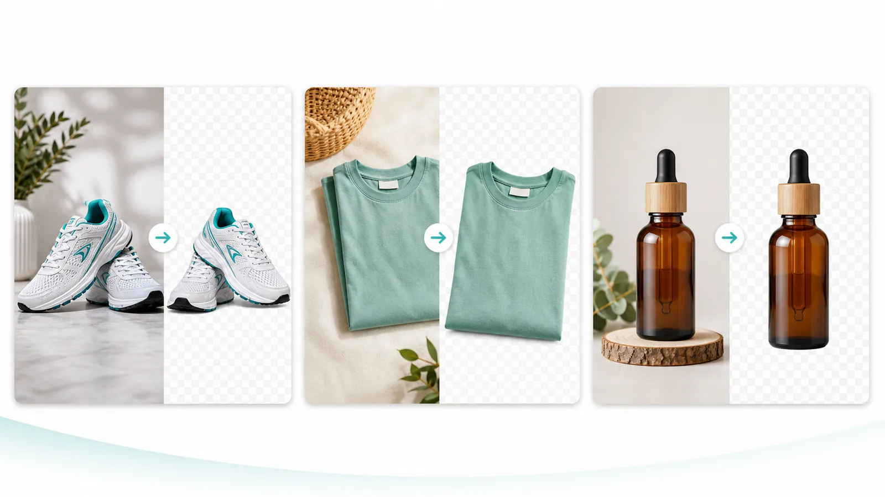

Useful when new stock, variants or marketplace listings create repeated background-removal work.
Directory launch
Bulk background removal for ecommerce product photos
BatchCutout is a focused browser workflow for sellers and catalog teams: upload product photos, remove backgrounds in batches, then export transparent PNGs or one ZIP.

Why it exists
A narrower tool for a repeated ecommerce task
Export transparent PNGs for product pages, ad layouts, marketplace assets and catalog handoff.
Product photos are processed in the browser and are not uploaded to BatchCutout servers.
Product proof
Inspect the output with real ecommerce photos
The best validation is practical. Use two real product photos, check the cutout, then upgrade only if the batch workflow fits your store or client work.
- No card required for the 2-image test.
- Pack 100 covers one 100-image batch.
- Monthly allowance: 2,000 images.

Fast answers
What directory visitors usually ask first
Ecommerce sellers, catalog teams, product photographers and small agencies with repeated batches.
Pack 100 covers one 100-image batch. Pro adds 2,000 images per month for recurring work.
No. BatchCutout is intentionally focused on product background removal and batch export.
Current offer
Test the output first, then buy Pack 100 for volume
The free test is designed for quality validation. Pack 100 is the low-friction paid step for a real batch; Pro stays available for recurring catalog and store-update work.